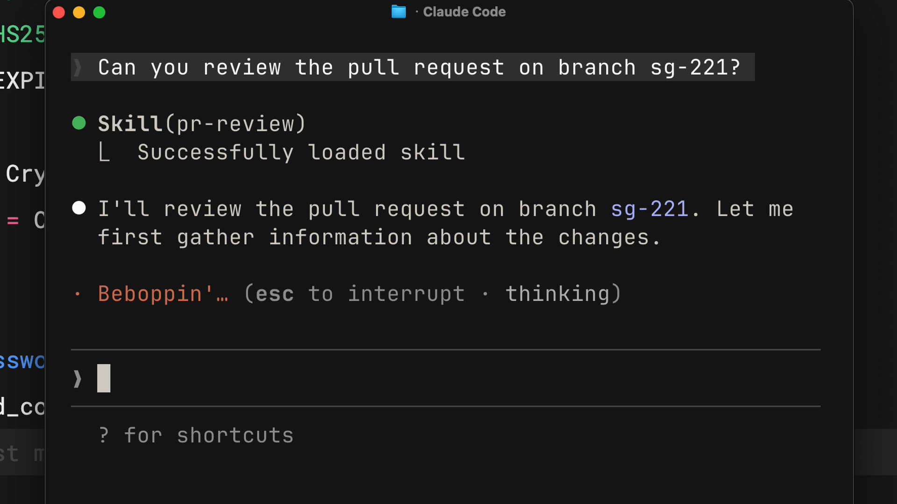

학습 목표
예상 소요 시간: 15분
이 레슨을 마치면 다음을 할 수 있습니다:
- Claude Code 스킬이 무엇이며 어떻게 작동하는지 설명하기
- 스킬이 저장되는 위치 설명하기 (개인 디렉토리 vs. 프로젝트 디렉토리)
- 스킬, CLAUDE.md, 슬래시 명령어의 차이점 구분하기
- 스킬이 적합한 커스터마이징 도구인 상황 파악하기
스킬이란 무엇인가요?
(3분)
이 영상에서는 스킬을 소개합니다. 스킬은 Claude Code가 특정 작업을 자동으로 처리하는 방법을 가르치는 재사용 가능한 마크다운 파일입니다. Claude에게 PR을 검토하거나 커밋 메시지를 작성해 달라고 요청할 때마다 지시사항을 반복하는 대신, 스킬을 한 번 작성해 두면 Claude가 해당 작업이 필요할 때마다 자동으로 적용합니다. 이 영상에서는 스킬이 무엇인지, 어디에 저장되는지, 그리고 다른 Claude Code 커스터마이징 옵션과 어떻게 다른지 설명합니다.
핵심 내용
-
스킬은 지시사항의 모음으로, Claude Code가 이를 발견하고 활용하여 작업을 더 정확하게 처리할 수 있습니다. 각 스킬은 이름과 설명이 포함된 프런트매터를 가진
SKILL.md파일에 저장됩니다. - Claude는 설명을 기반으로 스킬을 요청과 매칭합니다. Claude에게 무언가를 요청하면, Claude는 해당 요청을 사용 가능한 스킬 설명과 비교하여 일치하는 스킬을 활성화합니다.
-
개인 스킬은
~/.claude/skills에 저장되며 모든 프로젝트에서 사용할 수 있습니다. 프로젝트 스킬은 저장소 내의.claude/skills에 저장되며 저장소를 클론하는 모든 사람과 공유됩니다. - 스킬은 필요할 때 로드됩니다 — 모든 대화에 로드되는 CLAUDE.md나 명시적 호출이 필요한 슬래시 명령어와 달리, 스킬은 Claude가 상황을 인식할 때 자동으로 활성화됩니다.
- Claude에게 같은 내용을 반복적으로 설명하고 있다면, 그것이 바로 스킬로 만들어야 할 신호입니다.
팀의 코딩 표준을 Claude에게 설명할 때마다 같은 말을 반복하게 됩니다. PR 검토마다 원하는 피드백 구조를 다시 설명하고, 커밋 메시지마다 선호하는 형식을 상기시켜 줘야 합니다. 스킬이 이 문제를 해결합니다.
스킬은 Claude에게 무언가를 하는 방법을 한 번 가르쳐 주는 마크다운 파일입니다. Claude는 그 지식을 관련 상황이 발생할 때마다 자동으로 적용합니다.
스킬이란
스킬은 Claude Code가 발견하고 활용할 수 있는 지시사항과 리소스의 모음으로, 작업을 더 정확하게 처리하는 데 도움이 됩니다. 각 스킬은 이름과 설명이 포함된 프런트매터를 가진 SKILL.md 파일에 저장됩니다.

설명은 Claude가 해당 스킬을 사용할지 결정하는 기준입니다. Claude에게 PR 검토를 요청하면, 요청 내용을 사용 가능한 스킬 설명과 비교하여 관련 스킬을 찾습니다. Claude는 요청을 읽고 모든 사용 가능한 스킬 설명과 비교한 후, 일치하는 스킬을 활성화합니다.
스킬의 프런트매터는 다음과 같은 형태입니다:
---
name: pr-review
description: Reviews pull requests for code quality. Use when reviewing PRs or checking code changes.
---프런트매터 아래에는 실제 지시사항을 작성합니다 — 검토 체크리스트, 형식 선호도, 또는 해당 작업에서 Claude가 알아야 할 모든 내용을 기재합니다.
스킬 저장 위치
필요에 따라 스킬을 다양한 위치에 저장할 수 있습니다:
-
개인 스킬은
~/.claude/skills(홈 디렉토리)에 저장됩니다. 이 스킬은 모든 프로젝트에서 사용할 수 있습니다 — 커밋 메시지 스타일, 문서 형식, 코드 설명 방식 등을 포함합니다. -
프로젝트 스킬은 저장소 루트 디렉토리의
.claude/skills에 저장됩니다. 저장소를 클론하는 누구든 이 스킬을 자동으로 사용할 수 있습니다. 회사의 브랜드 가이드라인, 선호하는 폰트, 웹 디자인 색상 등 팀 표준이 여기에 저장됩니다.
Windows에서 개인 스킬은 C:/Users/<your-user>/.claude/skills에 저장됩니다.
프로젝트 스킬은 코드와 함께 버전 관리에 커밋되므로 팀 전체가 공유할 수 있습니다.
스킬 vs. CLAUDE.md vs. 슬래시 명령어
Claude Code에는 동작을 커스터마이징하는 여러 방법이 있습니다. 스킬은 자동으로 작동하고 작업별로 특화되어 있다는 점에서 독특합니다. 각각의 차이점은 다음과 같습니다:
- CLAUDE.md 파일은 모든 대화에 로드됩니다. Claude가 항상 TypeScript의 strict 모드를 사용하길 원한다면 CLAUDE.md에 넣으면 됩니다.
- 스킬은 요청과 일치할 때 필요에 따라 로드됩니다. Claude는 초기에 이름과 설명만 로드하므로 전체 컨텍스트 창을 채우지 않습니다. 디버깅할 때는 PR 검토 체크리스트가 컨텍스트에 있을 필요가 없습니다 — 실제로 검토를 요청할 때 로드됩니다.
- 슬래시 명령어는 명시적으로 입력해야 합니다. 스킬은 그렇지 않습니다. Claude가 상황을 인식하면 자동으로 적용합니다.
Claude가 스킬을 요청과 매칭하면 터미널에서 로드되는 것을 확인할 수 있습니다:

스킬 활용 시점
스킬은 특정 작업에 적용되는 전문 지식에 가장 효과적입니다:
- 팀이 따르는 코드 리뷰 표준
- 선호하는 커밋 메시지 형식
- 조직의 브랜드 가이드라인
- 특정 문서 유형을 위한 문서 템플릿
- 특정 프레임워크를 위한 디버깅 체크리스트
기본 원칙은 간단합니다: Claude에게 같은 내용을 반복적으로 설명하고 있다면, 그것이 바로 스킬로 만들어야 할 내용입니다.
레슨 성찰
- 최근 Claude Code와의 상호작용을 떠올려 보세요. 어떤 지시사항을 반복적으로 입력했나요? 스킬이 있었다면 시간을 얼마나 절약할 수 있었을까요?
- 팀의 워크플로우를 생각해 보세요. 어떤 표준이나 프로세스를 스킬로 만들면 가장 효과적일까요?
다음 단계
다음 레슨에서는 처음부터 첫 번째 스킬을 만들고, Claude Code가 뒤에서 스킬을 어떻게 발견하고, 매칭하고, 로드하는지 배웁니다.
피드백
강좌를 진행하면서 스킬을 어떻게 활용하고 있는지, 그리고 피드백이 있으시다면 여기에서 공유해 주세요.